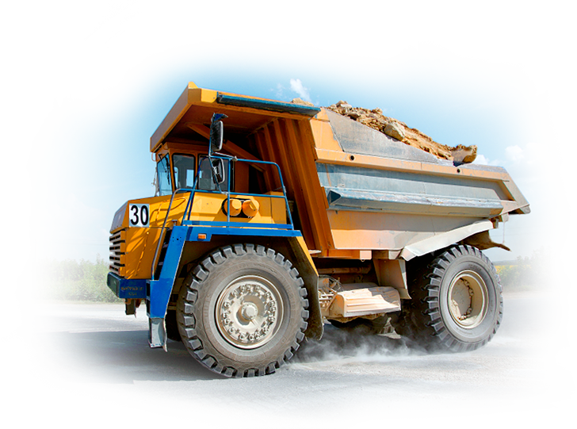
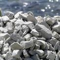
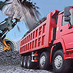
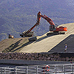

КАТАЛОГ
Щебень
5*20 М 400
Используется в качестве наполнителя при производстве бетона товарного, железобетонных изделий.
40*80 М 400
20*80 М 400
20*40 М 400
В строительстве автодорог;
При отсыпке оснований автодорог, стоянок, оснований под фундаменты;
Для благоустройства дворовых дорог.
80*120 М 400
На укрепление береговых склонов;
В строительстве гидротехнический сооружений используется при закладки «габионов» в строительстве гидротехнический сооружений;
В целях улучшения экологии для гашения вредных химических реакцийв целях улучшения экологии для гашения вредных химических реакций.
ГПЩС
С 8
Используется в качестве наполнителя при производстве бетона товарного, железобетонных изделий. Бетона товарного, железобетонных изделий.
С 4
При отсыпке оснований автодорог, стоянок, оснований под фундаменты
О нас
Мы рады приветствовать Вас на нашем сайте!
Мы благодарны Вам за внимание к нашему предприятию. Уверен, что это виртуальное знакомство может привести к долговременному и взаимовыгодному сотрудничеству. Ведь Сокский карьер – это колоссальный опыт работы, накопленный за полвека, современные технологии производства и рыночные механизмы менеджмента.
Все это открывает широкие перспективы, что наглядно подтверждают последние годы работы предприятия: значительно возросли объемы производства, увеличились капиталовложения на переоснащение материально-технической базы, природоохранные мероприятия, социальное развитие, благотворительность.
Мы закрепили свои позиции на строительном рынке Самарской губернии, постепенно осваиваем близлежащие регионы. Сбалансированная ценовая политика и учет интересов клиентов позволили нам привлечь практически 90% строительных компаний города и области.
Вместе с Вами мы готовы осваивать новые области применения нашей продукции. Желаю успехов и удовольствия от плодотворного сотрудничества!
История компании
C 1980
Сокский карьер окончательно сформировался как одно их крупнейших предприятий – производителей строительных материалов. А его территория с небольшими изменениями сохранилась до наших дней. Сегодня основная промышленная площадка располагается на северном склоне Сокольих гор (восточный отрог Жигулевских гор) на левом берегу реки Сок.
с 1951
Был построен и запущен в эксплуатацию первый камнедробительный завод, который и стал основой для будущего Сокского карьера...
До 1951
Месторождение Царёв Курган разрабатывалось как источник поступления щебня для дорожного строительства. На базе этого месторождения.
c 1945
Осуществляется добыча химизвестняков подземными штольнями «Сок». На базе этого месторождения работал камнедробильный завод №4, мощностью 240 тыс. куб. метров щебня в год.
с 1937
Масштабные изыскательные работы в предвоенный период дали необходимый толчок для развития района Сокольих гор. Так, в местечке Старая Жила ведётся разработка камня подземным способом.
с 1795
Началось детальное описание всего Волжского края. На территории Самарской области находиться несколько карьеров. Основной их них, где сосредоточены крупнейшие запасы известняка и камня находиться в Сокольих горах.
Новости
- 
Щебень оптом
Cо 2 февраля 2015 произойдет изменение отпускных цен на продукцию ОАО «Сокское карьероуправление».
- 
График отгрузки
Уведомляем Вас, о том, что с 01.11.2014г. отпуск товара с территории ОАО «Сокское карьероуправление» будет производиться в период:
Понедельник - Пятница - с 7ч.30мин. до 16ч.30мин.
(выписка талонов на погрузку до 15ч.30 мин.);
Отгрузка в сверхурочное время согласовывается с отделом продаж.
Суббота-Воскресенье – выходные дни.
- 
Отправка груза
Удобное географическое месторасположение ОАО «Сокское карьероуправление» позволяет производить отгрузку товара на автотранспорт и на водный транспорт.